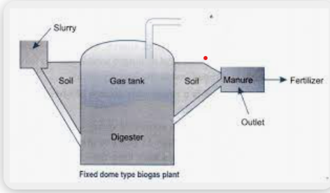
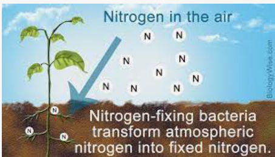

Question1: What is Biogas?
Answer:
Biogas a renewable fuel that's produced when organic matter, such as food or animal waste, is broken down by microorganisms in the absence of oxygen. This process is called anaerobic digestion. For this to take place, the waste material needs to be enclosed in an environment where there is no oxygen.
It consists of methane, carbon dioxide in conjunction with the small amount of hydrogen sulphide, and moisture.
- 
- BioGas
Question2: Name the agent used as stabilizing agent in toothpastes and why?
Answer:
Xanthan gum is a stabilizer and binding agent that ensures all the other ingredients in toothpaste stay evenly mixed together. Binding agents like this help to prevent the solid and liquid ingredients from separating in the tube.
- Xanthan gum
Question3: Write about the use of bacteria in decomposition.
Answer:
Bacteria break down (or decompose) dead organisms, animal waste, and plant litter to obtain nutrients. But microbes don't just eat nature's waste, they recycle it. The process of decomposition releases chemicals (such as carbon, nitrogen, and phosphorus) that can be used to build new plants and animals.
Question4: Name three diseases caused by bacteria.
Answer:
-
- Tuberculosis
-
- Whooping Cough
-
- Typhoid
Question5: ow do bacteria help in nitrogen fixation?
Answer:
Bacteria convert unusable atmospheric nitrogen gas (N2) into a usable form (like ammonia) for plants. This helps plants grow and thrive, especially those that can't fix nitrogen themselves.
- 
- Nitrogen gas process